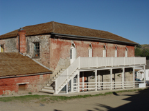
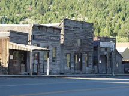

©Roger Heng Oxbow Grand Teton National Park
The west has many ghost towns. Many are the result of the gold or silver being mined out. The town was built to house the miners.
When the mine shut down the miners would leave to the next gold or silver strike or new mine.
Towns had no other way to stay live with the mine gone.
We have a number of these towns near us. The towns of Gilmore, ID., Bannock, Mt. [select Montana and Beaverhead area],
Virginia City, MT., and Nevada City, MT. all have been sites of photo trips.
Chesterfield, Idaho is a ghost town but not the result of a mine closing.
This is a rural agricultural town that did not survive.
 |
 |
 |
 |
Bannock, MT |
Virginia City, MT |
Elk Horn, MT |
Bayhorse,ID |
© Sue Heng |
© Doug Jenson |
© Jan Larcom |
©
Ann Christensen |
 |
 |
 |
 |
Main Street Virginia City, MT |
Grocery Gilmore, ID |
Bayhorse, ID |
Store Virginia City, MT |
© Doug Jenson |
© Jan Larcom |
©
Ann Christensen |
© Amy
Kaiser |